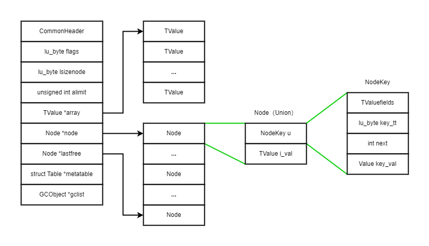

Lua 用 table 来表示一切数据结构，为了效率，Lua 将 table 的存储分为了
数组 和 哈希表 两个部分。
- 数组部分提供了紧凑且高效的随机访问。它的索引从1开始，这是 Lua 区别于其他语言的一个地方。
- 无法存进数组的其他数据则存储在哈希表中，它的键可以是除nil外的任意值。
这样的分开存储对使用者来说完全透明，但是我们需要掌握它存储的原理和逻辑，否则会造成预想不到的性能开销。它的数据结构定义如下：
1 | typedef struct Table { |
简单介绍下它的每个域：
- CommonHeader：可回收对象默认在头部分配的内存
- flags：表示这个表提供了哪些元方法，置 1 的位代表对应的元方法没有实现，元方法对应的 bit 定义在 ltm.h 文件中
- lsizenode：存储哈希表的大小，它的值是以2为底的对数。比如哈希表的长度是256，那么
lsizenode 的值为8，由此我们可以得到两个信息：
- 哈希表扩容是在原基础上加一倍，哈希表的内存大小始终是 2 的幂
- 这个域之所以是 byte 类型，是因为足够了
- alimit：表示数组部分的逻辑边界，下文详解
- array：指向数组部分的指针
- node：指向哈希部分起始位置的指针
- lastfree：指向哈希部分最后位置的指针
- metatable：指向当前表的元表的指针
- gclist：GC相关的链表，后续讲GC再探讨
alimit
alimit 理解为 array limit，是 Lua 5.4
引入的一个字段，用于标记 Table 数组部分的
逻辑边界。它的主要作用是动态调整数组部分的有效范围，从而优化表的访问效率。
怎么理解所谓的逻辑边界？首先，Lua 对数组的内存分配并不是最大索引是多少就分配多少，而是一个和哈希表大小挂钩自适应调整大小的分配规则（下文会分析），最后数组的大小会调整为一个2的幂。而 alimit 代表当前数组部分实际使用的索引范围。
先说下这个自适应调整是什么意思，假设我们有以下代码：
1 | local t = {} |
我们往一个 table 中插入了两个元素，这两个元素一定会分配在数组中吗？这是不一定的。Lua 会根据数组部分的有效索引和哈希部分的全部正整数 key（数组下标只能是正整数）的分布情况，以一个位图算法计算出一个边界，超过这个边界的部分会存储在哈希表中，这是整个自适应调整的大致逻辑，后面讲 table 相关算法时会详细分解。
那为什么需要 alimit ?
- 优化性能：在 Lua 中，数组部分的大小会根据表的使用情况动态调整，但实际使用的范围可能小于分配的大小。使用 alimit 可以快速判断哪些索引属于数组部分，而无需频繁操作内存。
- 支持稀疏数组：Lua 表可以是稀疏的，即索引并非连续的整数。alimit 帮助区分哪些索引属于数组部分，哪些应该存储在哈希部分。
使用 alimit 的场景
- 快速访问：通过 alimit，Lua 可以快速判断某个索引是否在数组部分的有效范围内，而无需逐一检查。
- 表的结构发生变化：如插入或删除元素，Lua 会重新评估表的分布（rehash）。在 rehash 过程中，Lua 会调整 alimit 以确保数组部分的逻辑边界是最优的。
为什么不再存储数组的实际大小（物理大小）？
首先通过 alimit 可以非常迅速地计算出实际大小，两者同时存储有些浪费。alimit 对于判断索引范围帮助更大，因此没有存储实际大小。
通过 alimit 算实际大小，本质上是算一个大于 alimit 的最小2的幂。如果一个 table 频繁地 rehash，这部分也存在一定的计算开销，Lua 考虑到了这个问题，让我们看看通过 alimit 计算实际大小的源码：
1 | /* |
Lua 对此做出的优化是，先判断当前 table 的 alimit 是否和实际大小一致，不一致再计算。它的核心是 isrealasize 方法，由此我们引申出下面的源码：
1 | /* |
结合上面的代码和它们的调用，这里 Lua 实际上是把结果记录在了
flags 域中, 在第 8 位（bit 7）如果标记为 1，那么代表该表的
alimit 不等于数组的实际大小。这里会产生一个疑问，flags
本来是用于标记元方法是否有效，在第 8
位存储，不会影响元方法的判断吗？（TM_SUB 是元方法掩码 7）
这里其实在设计上已经被切开了，当前表如果是元表，那么它的 flags 域会被用于元方法标记，而不会有 BITRAS 的判断。如果当前表不是元表，那么 flags 会用于标记 BITRAS
哈希表的结构

上图可以看出，array 域指向一个数组部分的起始位置。node 域指向一个哈希表的起始位置， lastfree 则是指向哈希表最后的位置。
这里我们需要关注下哈希表的节点，它的类型是
Node，定义如下：
1 | /* |
Node 作为一个联合体，它头部的内存空间用于存储实际的值，这样可以通过
i_val 域直接访问。当需要访问键和链表的内容时，结合后续的内存作为
NodeKey 结构体访问。next 指向链表中的下一个节点，而 key_tt
和 key_val 存储了键的类型和实际值
表的创建和释放
1 | Table *luaH_new (lua_State *L) { |
创建和释放的逻辑很简单，创建时分配好内存空间，然后给初始化数组部分和哈希部分的指针。释放则是先释放掉哈希部分，然后是数组部分，最后释放掉整个表。
有一个点需要注意，设置哈希部分的逻辑是调用
setnodevector(L, t, 0)，它的逻辑如下：
1 | /* |
这里 Lua 为了减少空表的维护，定义了一个不可改写的空哈希表：dummynode。空表被初始化时，node 域直接指向这个全局节点。由于它是只读的，所以不会引起线程安全问题。